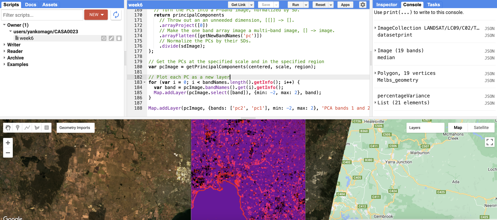

5 Week 5 - Google Earth Engine
5.1 Summary
The Google Earth Engine (GEE) is a tool that enables planetary scale analysis of remote sensing data. The tool enables easy access of satllite data from Landsat, Sentinel and many other products directly on the platform, using the Javascript-based code editor. The extension to Python is actively being developed, particularly with the geemap Python package. The data processing is done on Google’s servers, which combined with the readily accessible datasets makes GEE an immensely powerful research tool.
All the operations and objects are stored on the server, and interacting with them is done by writing specific code in JS that packaged into JSON is sent to the server to execute. Using Google’s servers allows for parallelisation of operations, which enables extremely large computational operations to complete in a reasonable time frame. That is why it is for example important to use map functions, rather than loops. GEE will also dynamically scale the resolution of satellite imagery, based on the request for optimal viewing.
5.2 Applications
Use of GEE in publications has skyrocketed since 2015, overtaking the number of newly published research papers where analysis was performed using Python, R or QGIS. The review of literature using GEE in methodology revealed several interesting facts, which show the potential of GEE for global analysis and research [Velastegui-Montoya et al. (2023)]. The authors found GEE was used in studies in disciplines ranging from earth and environmental science, social science, to engineering.
While browsing the literature, several other interesting papers caught my interest.For example [Liu et al. (2018)] use GEE to identify global urbanisation between 1990 to 2010, showing that urban land has increased by around 43% in these years. The authors estimate it using a custom Normalized Urban Areas Composite Index from Landsat 5 data, constructed as a base from several established indices, including NDVI. What is very important, is that the authors make the dataset from this analysis publicly available. Another study used the MODIS satellite data for wildfire damage assessment for all of Australia, based on land cover classification of pre and post-fire images [Seydi et al. (2021)].
5.3 Reflections
In the practical sessions I got to use GEE for the first time, which involved loading some Landsat data and running certain operations. Playing around with the data in GEE, I certainly realised what potential it has for large-scale analysis. I added some satellite data for Melbourne and understood in practice how mosaicking is applied to multiple overlapping images, as well as applied some texture measures and PCA to the image.

Overall, it seems to me that the power of GEE is greatly underestimated, as it enables truly impressive large-scale analysis to be run by anyone with internet access, for free. I previously did not realise how powerful this tool is and I cannot wait to see where this course will take me further in regards to GEE. As a sidenote, I am not a huge fan of the GUI of GEE - Google could probably do much better and I hope they soon will.